GELOSIA
BLACK LEATHER COAT · CHAPTER I
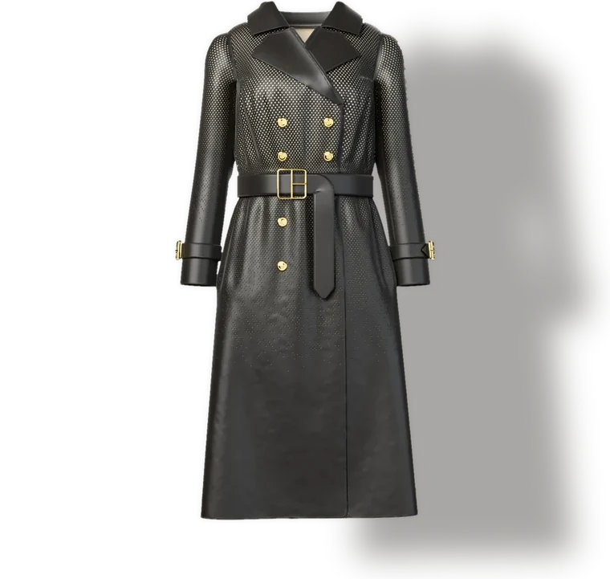
- BLACK LEATHER
- CREAM SILK LINING
- BELTED, DOUBLE-BREASTED
- MID-CALF
- SIZE XS · S · M · L · XL
- BLACK LEATHER
- BELTED, DOUBLE-BREASTED
- MID-CALF
The piece·Keep a seat
USD 5,400BLACK LEATHER COAT · CHAPTER I

The piece·Keep a seat
USD 5,400PENDANT · CHAPTER I
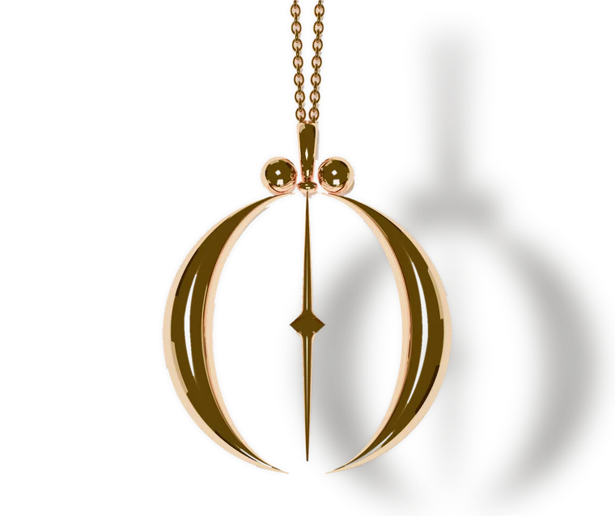
The piece·Keep a seat
USD 3,800LEATHER BOMBER · CHAPTER I
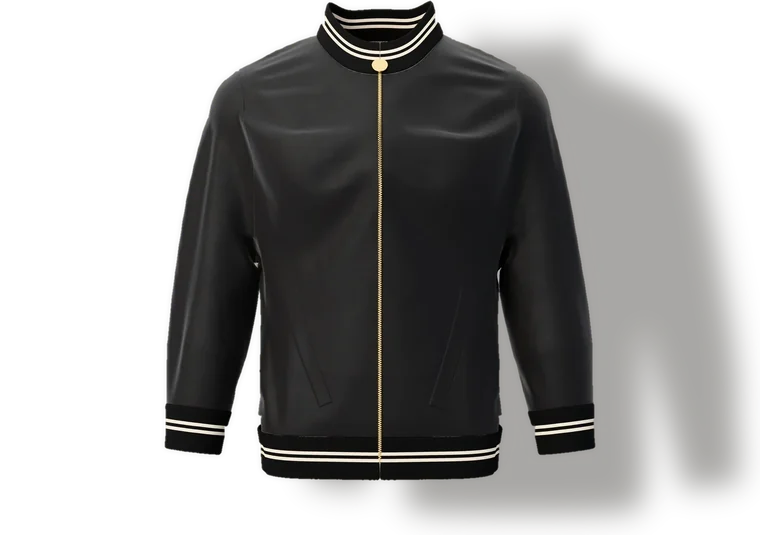
The piece·Keep a seat
USD 3,200TOP-HANDLE BAG · CHAPTER I
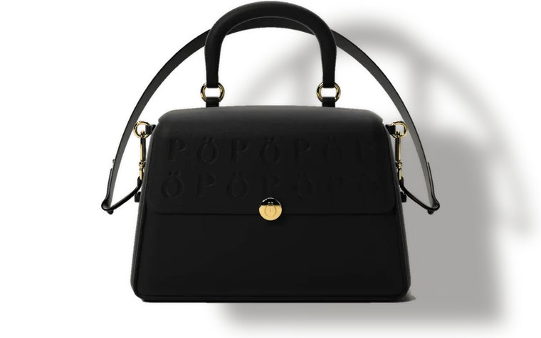
The piece·Keep a seat
USD 2,900MINI DUFFEL · CHAPTER I
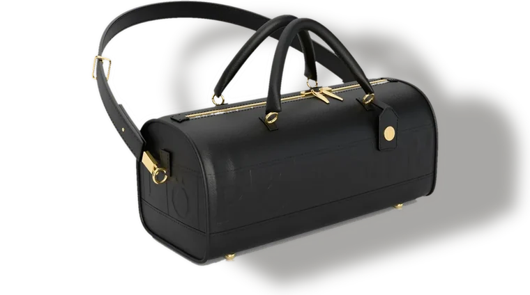
The piece·Keep a seat
USD 2,600ROUND BAG · CHAPTER I
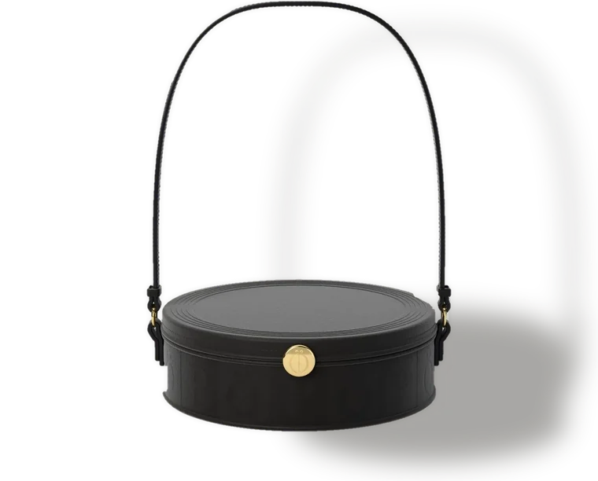
The piece·Keep a seat
USD 2,200OPERA GLOVES · CHAPTER I
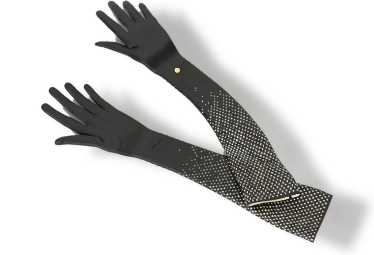
The piece·Keep a seat
USD 1,050SILK SLIP · CHAPTER I
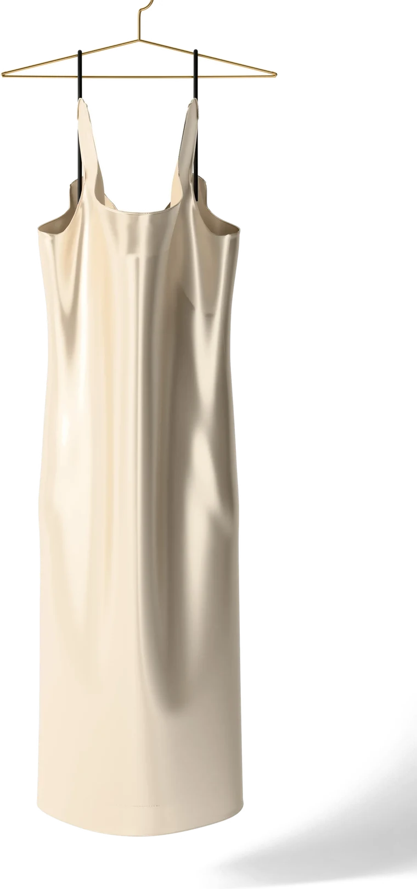
The piece·Keep a seat
USD 950MONOGRAM KNIT HOODIE · CHAPTER I
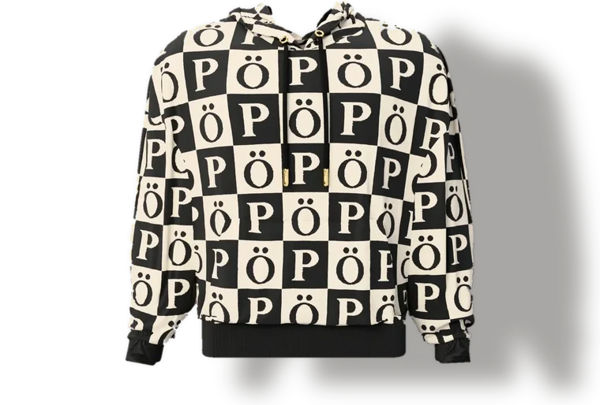
The piece·Keep a seat
USD 595BELT · CHAPTER I
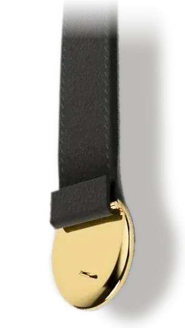
The piece·Keep a seat
USD 550SUNGLASSES · CHAPTER I
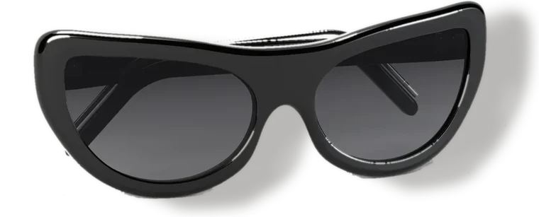
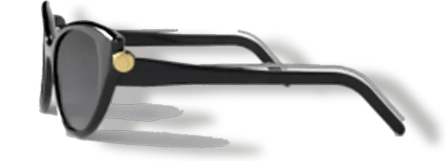
The piece·Keep a seat
USD 495KNIT HOODIE · CHAPTER I
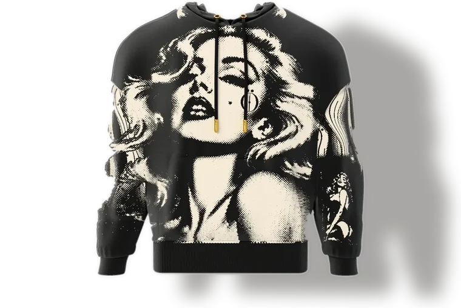
The piece·Keep a seat
USD 400SILK SCARF · CHAPTER I
The piece·Keep a seat
USD 395TROUSERS · CHAPTER I
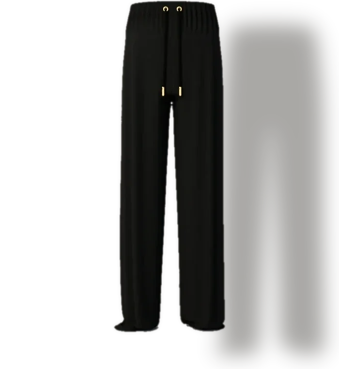
The piece·Keep a seat
USD 325CARD HOLDER · CHAPTER I
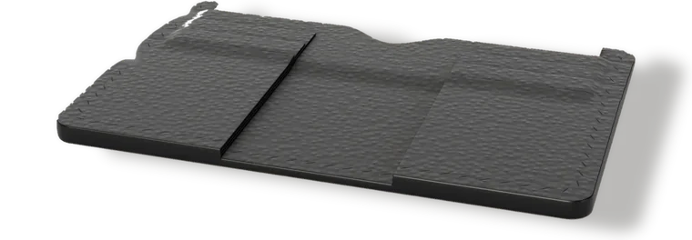
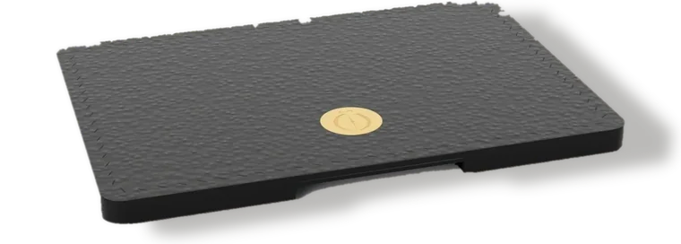
The piece·Keep a seat
USD 295NECKLACE · CHAPTER I
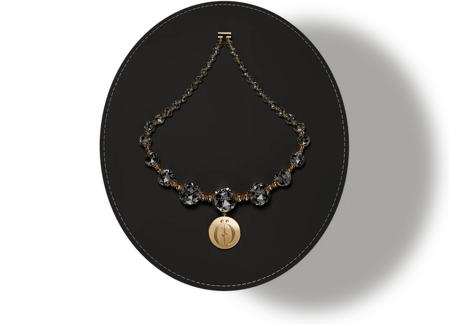
The piece